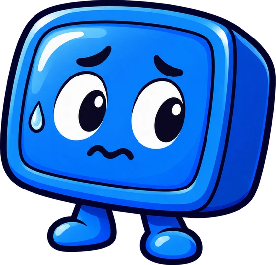
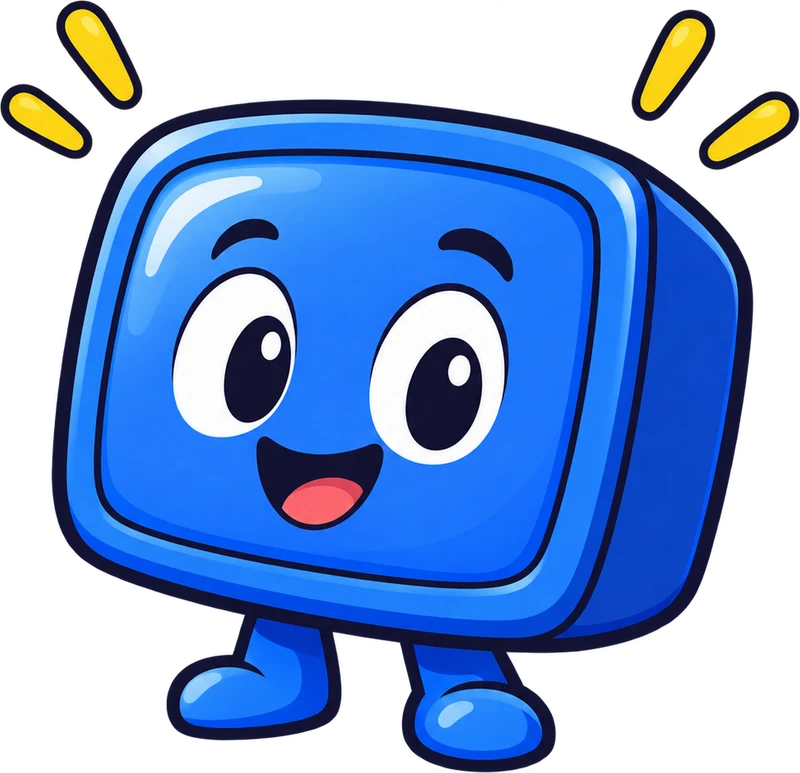
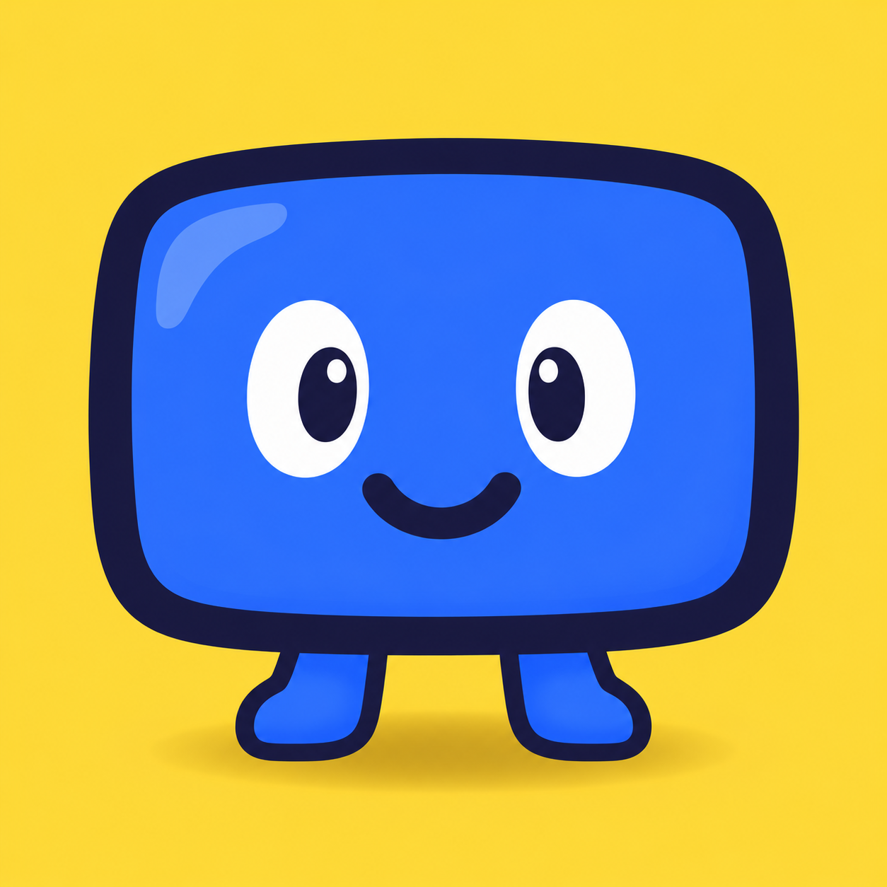

Illustration


Your TV came with a lot of extras.
Tidy it from your phone.
1 · Find your TV
Same Wi-Fi. Press Allow once.
2 · Backup first, then pick
Every app has a switch.
3 · Turn them off
Turned off, never deleted.
A clean home screen, if you want one.
One tap puts it all back.
✓ Backup saved
↻ Restore everything


TidyTVFree · open source · no computer, no AI
⬇ Download the free app
★ Star on GitHub
tidytv.winkle.dev